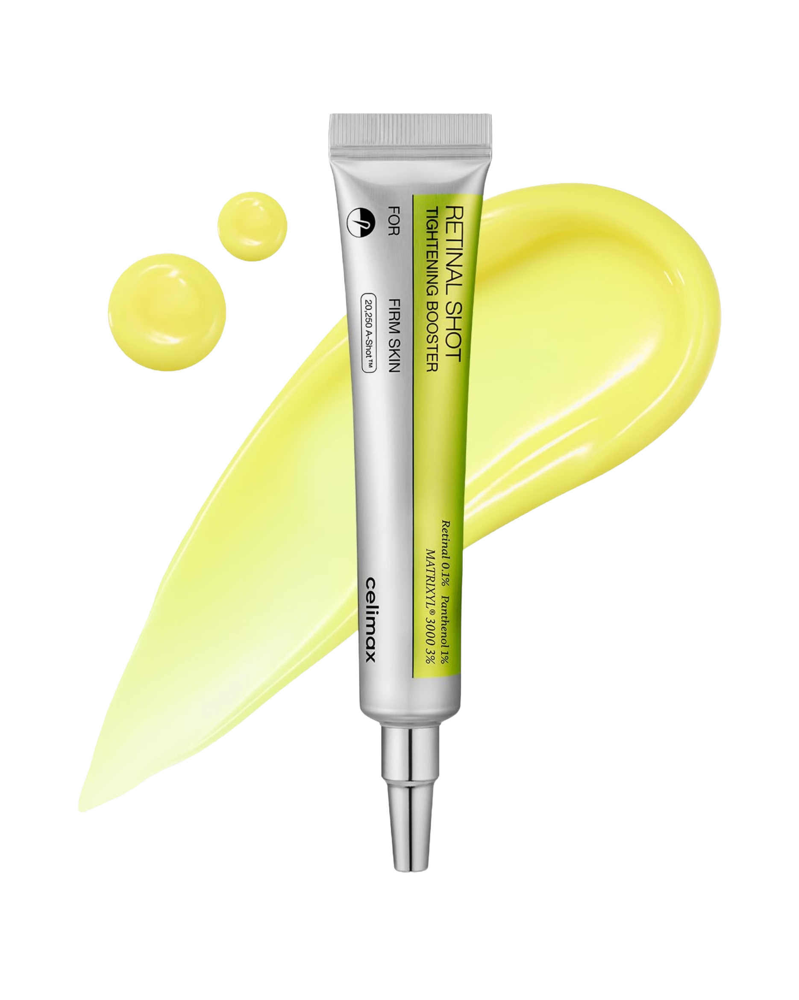
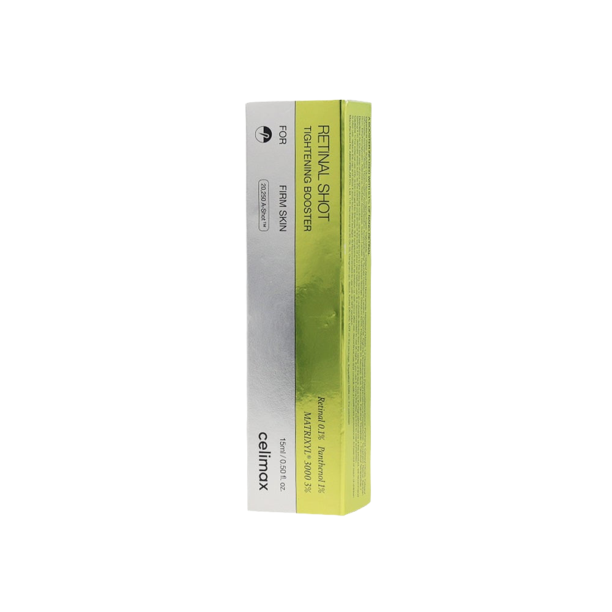

Celimax
Le Vita-A Retinal Shot Tightening Booster de Celimax est un concentré anti-âge de pointe formulé au rétinal (aldéhyde de vitamine A), actif jusqu'à 11 fois plus puissant que le rétinol classique et beaucoup mieux toléré par la peau. Sa technologie exclusive A-Shot™ encapsule le rétinal pour maximiser la pénétration cutanée tout en réduisant l'irritation. En quelques semaines d'utilisation, les pores sont visiblement resserrés, la texture de la peau affinée, et les premières rides atténuées. Sa formule légère et non grasse est enrichie en niacinamide pour unifier le teint, en adénosine pour stimuler la fermeté, et en panthénol pour maintenir le confort cutané. Idéal pour initier une routine rétinal sans irritation.
Partout au Maroc
Importé directement de Corée
Le Vita-A Retinal Shot Tightening Booster de Celimax est un concentré anti-âge de pointe formulé au rétinal (aldéhyde de vitamine A), actif jusqu'à 11 fois plus puissant que le rétinol classique et beaucoup mieux toléré par la peau. Sa technologie exclusive A-Shot™ encapsule le rétinal pour maximiser la pénétration cutanée tout en réduisant l'irritation. En quelques semaines d'utilisation, les pores sont visiblement resserrés, la texture de la peau affinée, et les premières rides atténuées. Sa formule légère et non grasse est enrichie en niacinamide pour unifier le teint, en adénosine pour stimuler la fermeté, et en panthénol pour maintenir le confort cutané. Idéal pour initier une routine rétinal sans irritation.
1. Appliquer le soir uniquement sur une peau propre et sèche. 2. Déposer 1 à 2 gouttes sur les zones ciblées (pores, rides) et tapoter doucement jusqu'à absorption. 3. Suivre d'une crème hydratante pour sceller le produit. 4. Commencer 2x par semaine, augmenter progressivement jusqu'à 4–5x selon tolérance. 5. Appliquer obligatoirement un SPF50+ le matin – le rétinal sensibilise la peau aux UV. ⚠️ Éviter le contour des yeux et les lèvres. Ne pas utiliser avec des AHA/BHA le même soir.
Rétinal (Retinaldehyde) 0,05%, Niacinamide, Adénosine, Panthénol (Provitamine B5), Extrait de levure, Tocophérol (Vit. E), Allantoine, Peptides de soie, Carbomer